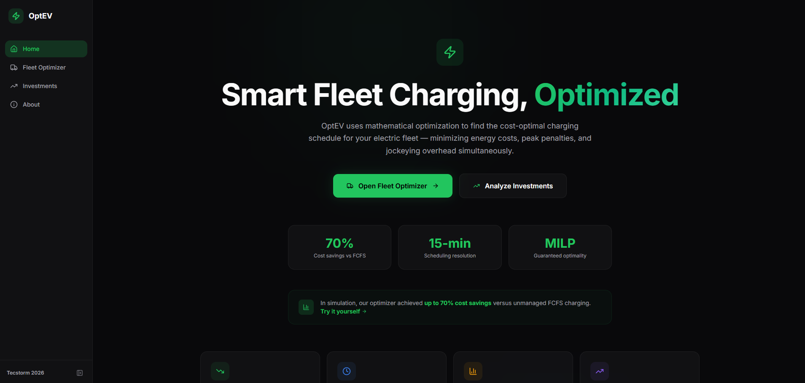

Rui Rodrigues
Operations Research, Machine Learning & AI for Better Decisions
About Me
I use operations research, machine learning, and AI to support better decisions in complex systems. My work combines optimization, simulation, and data-driven methods across logistics, mobility, infrastructure, and industrial applications.
Latest News Full timeline →
- Aug 2026 Published Refrigerated Containers as Distributed Thermal Energy Storage: Performance and Control Strategies in Port of Sines’ Microgrid in the Journal of Energy Storage.
- Jul 2026 Published Loyalty and Tier-Based Benefit Allocation Frameworks for Renewable Energy Communities in Utilities Policy.
- Jun 2026 Published Optimal Membership for Anchor-Centric Renewable Energy Communities at the 2026 22nd International Conference on the European Energy Market (EEM).
- Apr 2026 Published Simulation-Based Assessment of Decarbonization Alternatives in Container Terminals at the 2026 Open Source Modelling and Simulation of Energy Systems (OSMSES).
- Mar 2026 Participated in Tecstorm 2026 as finalists, developing OptEV, an optimization prototype for smart fleet charging.
Featured Paper View all →
Refrigerated Containers as Distributed Thermal Energy Storage: Performance and Control Strategies in Port of Sines’ Microgrid
2026Journal of Energy Storage, Volume 180, Article 124120
Featured Project View all →
OptEV (Tecstorm 2026 Finalist)
2026A mathematical optimization prototype (using MILP models) designed to find the cost-optimal charging schedule for electric vehicle fleets. Minimizes energy costs and peak penalties while offering automated jockeying and infrastructure ROI evaluations. Live at optev.pt.

Experience
Researcher
- Designed and implemented optimization, simulation and decision-support models for complex resource-constrained operational systems, including port logistics, renewable energy communities, datacenter flexibility and energy-aware asset scheduling.
- Documented research output in 5 journal papers and 3 conference articles.
View full description Hide full description
- Developed Python-based simulation components for OpSEASim, an open-source energy-aware discrete-event / agent-based simulator for container terminal operations, modelling quay cranes, yard cranes, trucks, charging stations, refrigerated containers and energy-consumption layers.
- Formulated MILP models for coordinating flexible assets under operational and energy constraints, including refrigerated containers modelled as distributed thermal storage with different control formulations.
- Built and evaluated multi-stage, multi-objective and bilevel optimization frameworks for renewable energy communities, covering member selection, tariff design, benefit allocation, loyalty-based redistribution, no-harm constraints and fairness-efficiency trade-offs.
- Contributed to a MILP formulation for geo-distributed datacenter workload scheduling, jointly optimizing temporal shifting, spatial migration and flexibility-market participation through scheduling and offer-acceptance decisions.
- Ran computational experiments, scenario analyses and benchmarking studies to evaluate solution quality, scalability, operational trade-offs and robustness across alternative system configurations.
Summer Intern
- Built a Python/scikit-learn short-term load forecasting pipeline for highly electrified seaports, testing 7 Random Forest model variants with lagged demand, calendar, ship, crane, TEU and vessel-time features; best model achieved R² 0.92, MAE 127.53 and MAPE 4.51%.
- Awarded Best Summer Internship at CPES for work on electricity forecasting in port energy systems.
Consultant Intern
- Designed and implemented a Python-based vehicle-routing optimization tool for a retail/logistics client, modelling volume, route-duration, vehicle-capacity and operational feasibility constraints.
- Implemented a Clarke & Wright savings heuristic and scenario-evaluation workflow, producing 20%-26% estimated cost reductions across tested routing configurations.
View additional detail Hide additional detail
- Built a desktop application with Tkinter, PyInstaller and Excel-based input/output, enabling non-technical users to run optimization scenarios locally without Python installation, paid solvers, APIs or external hosting.